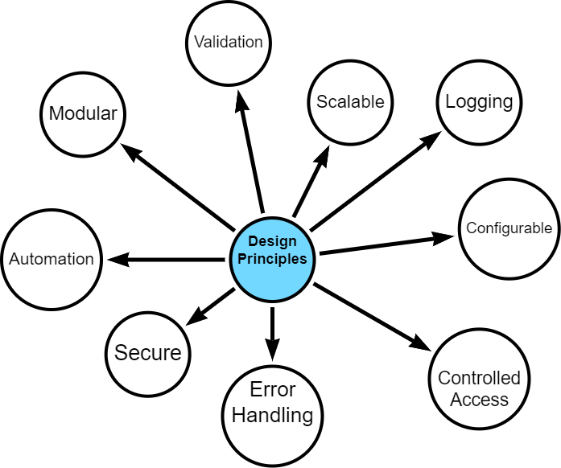
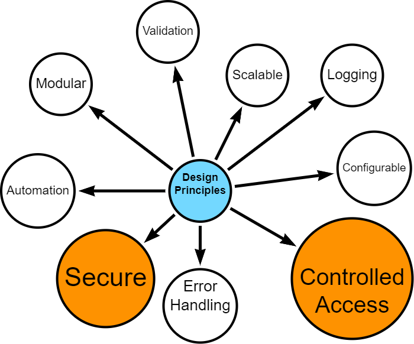
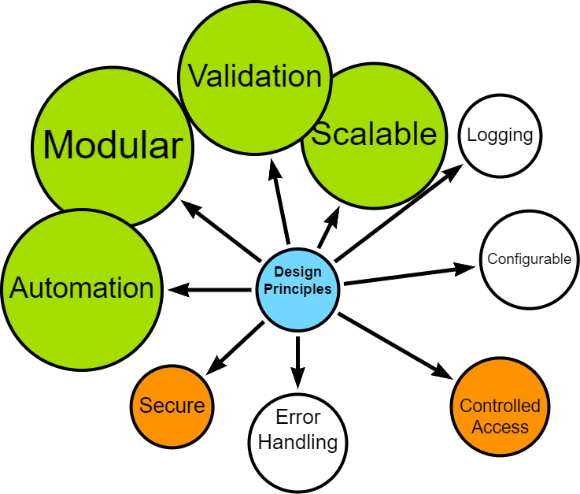
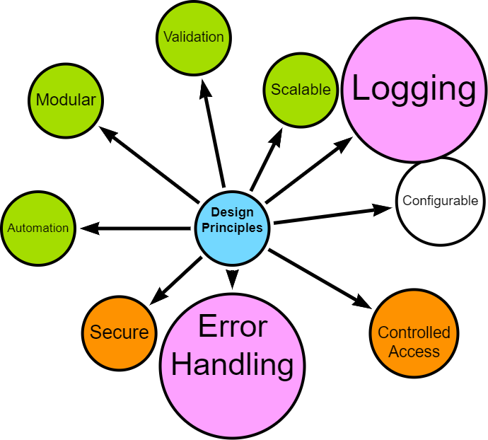
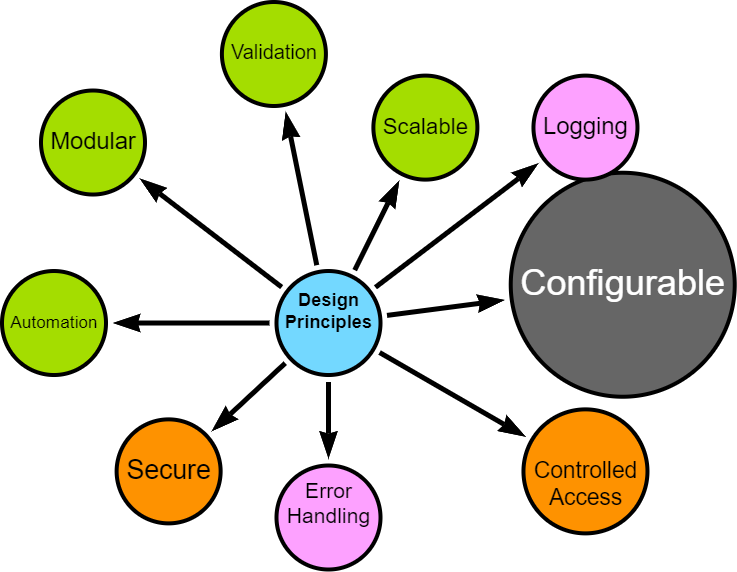

Data Engineering
3.1 Overview of the Data Pipeline
The data engineering pipeline is designed to efficiently and securely transfer selected university timetabling data from a relational database (MS SQL) to a graph database (Neo4j), enabling advanced analytics and insights.
This section provides an overview of the pipeline architecture, key design principles, and implementation approach.
3.1.1 High-level Architecture
The data pipeline consists of several key stages:
- Extraction: Data is extracted from the SQL database and saved into CSV files.
- Transformation: The CSV files are processed, cleaned, transformed, merged, and anonymised using Python code.
- Intermediate Storage: Processed CSVs are saved locally and uploaded to Google Drive (required for Neo4j Aura free instance).
- Loading: Clean data is processed and loaded into Neo4j.
3.1.2 Key Design Principles
This pipeline represents a comprehensive approach to data engineering, incorporating several best practices in data handling, processing, and database management.

The data pipeline is built on several core design principles. I started with a strong sense of what I wanted to achieve - a modular, scalable, secure and configurable design - however, what exactly this meant was discovered in the development process. Given that the project has several limitations including resources, technology and is also time-constrained, it was important to make the final result one which can be built upon and potentially be developed within operational contexts. However, the project is also a proof-of-concept and as such, some design opportunities were eschewed in favour of simplicity and progress.
Security and Data Protection

- Secure access controls
- Data anonymisation
- Controlled handling of personally identifiable information
Modularity, Scalability and Automation

- Distinct, interoperable modules (extract, transform, load)
- Ability to handle increased data volume and complexity
- Automation, where possible
- Configurable data processing options (e.g., data chunking, row processing)
- Optimised, where possible
Error Handling and Logging

- Robust error handling mechanisms
- Comprehensive logging for troubleshooting and auditing
User configurable

- Flexible configuration options for data filtering, directory controls, and schema handling
3.1.3 Implementation Approach
The pipeline was developed using an iterative approach, allowing for continuous discovery, refinement and improvement.
Key aspects of the implementation include:
- Technology Stack: Python for data processing, MS SQL for source data, Neo4j for the target graph database. See Appendix for more details.
- Cloud Integration: Utilisation of Google Drive for intermediate storage, compatible with Neo4j Aura.
- Validation: Implemented at various stages to ensure data integrity and fitness for processing.
- Testing: Continuous simulated unit testing to ensure that componentsare behaving as expected.
3.1.4 Upcoming Sections
The following sections will delve into the specific implementation details of each stage in the pipeline, demonstrating how these principles are put into practice.
I will explore the iterative development process, configuration management, extraction techniques, transformation processes, loading strategies, and automation workflows. Finally, I will reflect on lessons learned and potential future enhancements to the data engineering components.
3.2 Iterative Development Approach
I followed an interative, agile-inspired approach when developing the data pipeline, despite being a team of one. This allowed for flexibility, continuous improvement and the opportunity to adapt to new insights during the process. The bulk of my effort was spent prototyping, testing and reviewing with each iteration resulting in a new challenge, issue, opportunity or occasionally, success.

3.2.1 Initial Planning and Requirements Gathering
The development cycle began with initial high-level planning and requirements gathering, where I imagined how each stage should work, trying to bear in mind future-proofing and repeatability principles.
I defined core functionality for each module (extraction, transformation, loading) adn outlined initial technical requirements and constraints. The planning documentation was maintained in Quarto and markdown files in a centralised repository for project information.
3.2.2 Prototyping
Following the initial planning, rapid prototyping was undertaken for each module:
- SQL prototyping for data extraction queries
- Python prototyping for data transformation and processing logic
- Neo4j prototyping for graph database schema and loading procedures
This stage allowed for quick exploration of different approaches and early identification of potential challenges as well as giving me the confidence to continue with my exploration.
3.2.3 Component-Based Development and Testing
Development proceeded with a focus on individual components:
- Each module (extraction, transformation, loading) was developed separately
- An iterative, component-based testing approach was employed
- While formal unit tests were not always created, each component was thoroughly tested for functionality
This approach allowed for rapid progress while maintaining a focus on component-level quality. It was during this phase that I started expanding configuration, logging and error-handling options.
3.2.4 Integration and Review
As components reached a stable state, they were integrated and reviewed:
- Components were combined to form larger functional units
- Integrated functionality was occasioanlly demonstrated to subject matter experts (operational timetablers)
- Feedback was gathered on functionality, usability, and alignment with requirements
3.2.5 Feedback Integration and Iteration
Insights gained from reviews and ongoing development were fed back into the process:
- New requirements or modifications were documented, for example updates to SQL SELECT statements and data model interpretations.
- The planning stage was revisited to incorporate new information.
- The development cycle was repeated, focusing on areas needing improvement or new functionality.
- Decisions were made to park some development opportunities for the future.
3.2.6 Version Validation and Documentation
At key milestones, when a stable version was achieved:
- End-to-end validation of the entire pipeline was performed.
- Results were documented in notebooks, including opportunities for improvement.
- Any issues identified were logged for the next iteration.
3.2.7 Continuous Learning and Adaptation
Throughout the development process, learning and adaptation became central to the project’s evolution. Each iteration brought new insights, often through trial and error. Early challenges included the need to modularise components before they became unmanageable, resisting the temptation to make overly ambitious changes, and recognising when refactoring was necessary. These experiences underscored the importance of incremental progress and consistent testing in maintaining project stability and direction.
This iterative journey was far from linear. There were many moments of frustration, periods of painstaking troubleshooting, and the constant urge to overdeliver, sometimes exceeding the original proof-of-concept scope. Yet, with each stumble and course correction, the process itself became more refined, transforming into a powerful tool for identifying and resolving issues.
While the core MVP (minimum viable product) requirements remained relatively stable (I set them after all), the iterative approach empowered me to seize opportunities for enhancement. Each chance to modularise, parameterise, or fine-tune sparked an almost compulsive drive for improvement, pushing the pipeline beyond its initial scope. This dedication to continuous refinement, while time-consuming, ultimately fostered a robust, flexible solution that could adapt gracefully to unforeseen challenges and embrace future opportunities.
It also meant the the proportion of overall emphasis shifted slightly from exploring Neo4j insights towards the development of a comprenhensive data engineering solution - entirely by virtue of where I spent my time.
The iterative approach proved to be more than just a development methodology. It facilitated personal growth, enhanced technical skills, and improved project management capabilities. This process emphasized the importance of persistence, learning from mistakes, and continual improvement in creating an effective data engineering solution. While challenging at times, this approach ultimately led to a more robust and flexible final product.
3.3 Configuration and Logging
3.3.1 Approach
The configuration and logging approach has been based on centralising configuration parameters into a python script and it has been organised into sections to manage the different aspects of the ETL pipeline:
[CHANGE IF YAML BASED APPROACHED FINISH, ELSE UPDATE FUTURE DEV]
3.3.2 Main Configuration options
- General
hostkeys: list of programme codes for filtering at extract and naming foldersfolder_name:name for organising directories; default =hostkeys
- Filepaths and Directories
root_dir: project root directory; default = current working directorynodes_folder_url,relationships_folder_url: Google Drive URLs to override dynamic data location, if neededgdrive_root_folder_url,gdrive_folder_name: Google Drive for storing processed data - shared root foldergoogle_credentials_path: Path to the Google service account credentials file.department_source,archibus_source: Paths to source data files to augment extracted data.
- Data Processing
chunk_size: number of rows to process during SQL extractiontemp_table_sql_files: SQL script filesnode_output_filename_template,rel_output_filename_template: Templates for output file names.
- neo4j
- Schema configuration options (dynamic or custom).
batch_size: Batch size for loading data into Neo4j.
nodes,relationships:- Detailed configuration for each node and relationship type, including file patterns, column mappings, data types, and more.
- data_type_mapping, display_name_mapping
- Mappings to customise how specific data types are handled and displayed.
- Logging
- Separate loggers for:
extractprocessloadgdrive
- Log level configurable: Controls the verbosity of logging (DEBUG, INFO, WARNING, ERROR, CRITICAL)
- Custom
timeitfunction to log time elapsed
- Separate loggers for:
notes to include:
information security
controlled access
secure university databases, windows system user, servers
anonymisation protocol - minimal personal information, still want operatinalisable tool
reusability, maintainability, testability
more data -> scale
more data -> properties, relationships
sql code changes
google drive apis
error handling
consistent logging
validation data
3.4 Extraction Process
- Brief overview of SQL extraction techniques
- Data Sources
- Code snippet
3.5 Transformation and Processing
- Data cleaning and preproessing
- Detailed discussion of the Python-based transformation process
- Highlight of the anonymisation function
- Discussion on safeguarding personal identifiable information
3.4 Loading to Graph Database
- Database schema
- Loading process
- Challenges and solutions with Neo4j Aura
- Cloud vs. desktop considerations
3.5 Automation and Workflow
- End-to-end automated process for specific programme data
3.6 Refelction and Lessons Learned
- Reflection on the agile approach and discoveries made during development
- Best practices discovered
- Challenges over come
- Potential future enhancements, developments